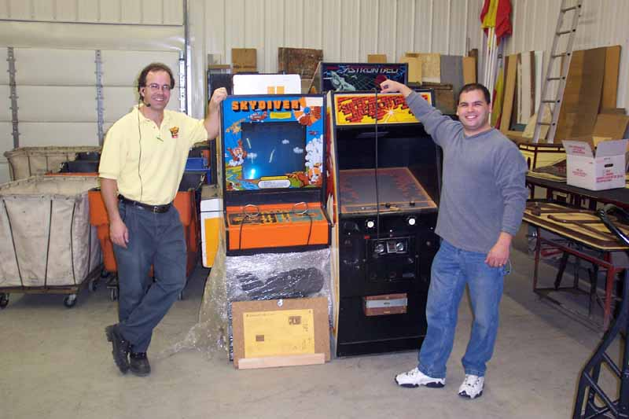

Dave helps get the Skydiver ready for Gary to wheel off of the truck.
Super Breakout is the final game in the truck to be unloaded.
Other
games included Super Bug, Le Mans, Tank II and Outlaw.
b
The final games are unloaded into the workshop at FunSpot.
Gary and Curt pause for a moment for a quick photo
with some of the games donated to FunSpot.... they couldn't have gone
to a better home and I am very happy
to know that they will be played and enjoyed by many people looking
to relive old memories and for
a new generation of gamers to experience there treasures of the past
and try them for the first time.
To See More about the Games Donated
To FunSpot in Wheirs Beach, NH
CLICK HERE